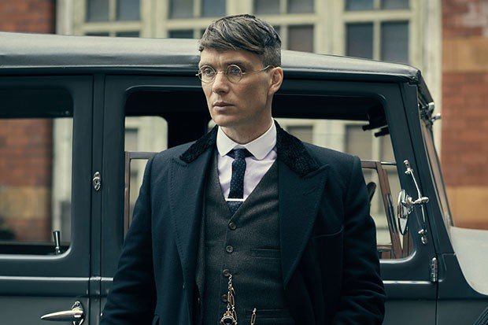

Cillian Murphy (/ˈkɪliən/; born 25 May 1976) is an Irish actor. He started his performing career as the lead singer, guitarist, and songwriter of the rock band The Sons of Mr. Green Genes. He turned down a record deal in the late 1990s and began acting on stage and in short and independent films.
